脑子：学会了。手：断幺九！
第六讲：四连复合型
- 四连型（3456）又被称为延长单骑，因为多出来的那个可以单骑做雀头。
- 而他真正的强项在组成面子上！
- 由于四连可以看做两个两面，因此有很广的进张范围。
- 尤其是 3-7 的四连，至少有8面进张！
- 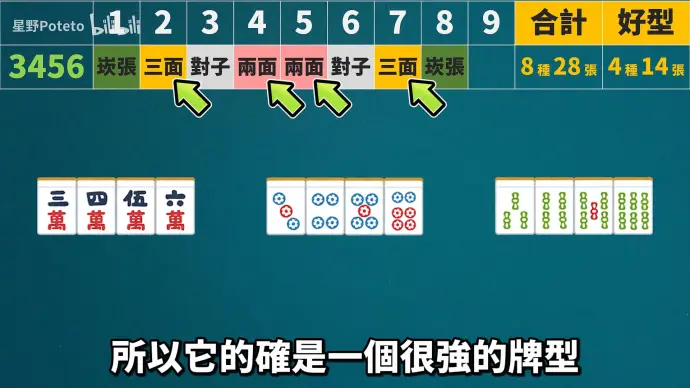
- 而靠边的四连其实就一般了（1234），只是边张+两面。
- 因此，不如看做 123 刻子和 4 单张；
- 靠边的 1 可以组成顺子，从而解放了 4；
- 之后 4 作为单张就可以和其他牌组成更好的牌型了；
第七讲：中膨型，亚两面
1. 中膨型
-
3-7 中膨型 如3445，对比3456，拥有一样多的好型进张！
- 摸 4 组成顺子和刻子，摸 35 可以做一杯口，妙哉。
- 但单独作为听牌型不太好，只能听剩下的两张 3。
-
而靠边中膨型1223，7889，价值不高。
- 甚至不如中间的数牌！！
- 建议直接拆掉，保留单独刻子即可；
- 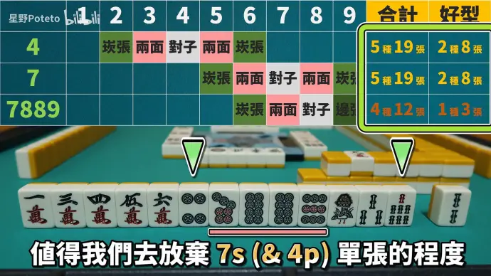
2. 亚两面
- 形如 1123,4456 这样可以拆成对子+两面的牌型叫亚两面。
- 因此 1233 不算是亚两面，等价于3的单张（暗刻可能性）；
- 在手牌缺对子的情况下，亚两面还是挺好用的。
- 如 3345，进张 36 都可以增加对子的数量；
- 如果对子足够的话，该拆就拆吧。
- 还有一种功能，亚两面也可以视作坎张+两面。
- 在可以吃牌的情况下（如3345 吃 4），可以优化牌型；
3. 感悟
- 四面牌型其实强化得比较少。
- 除了 3-7 中膨型以外，基本上看做单张就可以了；
- 不用太在意凑这些个牌型。
- 牌型是为了进张服务的！能听牌的话这种复合型该拆应拆；
第八讲：螺丝型
-
大螺丝：暗刻+两面 / 小螺丝：暗刻+崁张or边张。
- 暗刻可依需求拆解。eg：3444=34+44 听 25，3444=3+444 单骑听 3
-
手牌缺对子时，螺丝型也可以做出面子+对子组合。
- 然而，实战中对子比面子往往易得，所以螺丝型的用处比较少；
- 但像是风牌、三元牌这种将来肯定能做出刻子的，可以不参与讨论！
-
确实有点好笑：
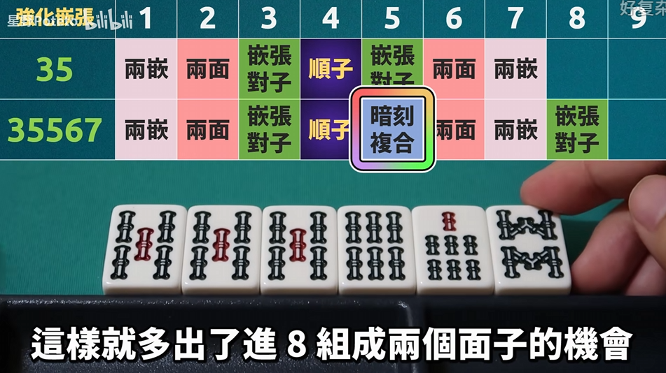
- “是我的话我就会拆掉9筒 虽然变2向听了 但是机会更多了。”
- “打九筒估计出不了银之间了。” “你离听牌远当然机会多哈哈哈。”
- “是我的话我就会拆掉9筒 虽然变2向听了 但是机会更多了。”
第九讲：跳张型
- 如 1345，2456，3567 这种的均属于跳张型。
- 对称地，3457，4568，5679 也属于跳张型；
1. 1345 跳张
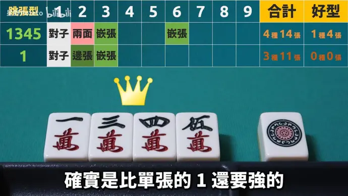
- 1345是最能体现跳张用处的牌型，它能使得1比单张1强！
- 同理，其派生的 13456 也能使 13 坎张得到提升：
- 首先进 2 直接就可以做两个刻子出来；
- 其次，进 5 可以组成一个两面坎张（134556 既可以视作 1345+56两面，也可以视作 456+135两坎）；
- 进 8 可以组成长两坎（134568），进27都可以组成两个刻子！（本质上是利用了四连的双边单骑）；
- 进 6 可以组成坎张对子（134566），进26都能做出刻子（从功能性来说，和 133 这种对子复合型很像）
- 进 7 就可以三面听牌（134567，进258），此时留 1 不仅维持进张，还能兼顾改良，间接提升了 3456 继续留在手上的可能性！
- 综上， 1345（5679）是要优于 28 单张的！！
- 注意到 134 和 1345 是两回事。
- 同理，其派生的 13456 也能使 13 坎张得到提升：
2. 2456 跳张
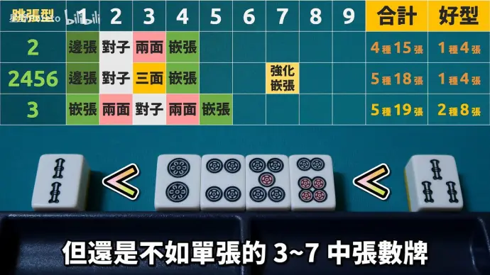
- 2456进7变为强化嵌张24567，进张能力和13456同等。
- 2456的2自然也强于单张28，但经过分析还是弱于 3-7 的单张数牌。
3. 3567 跳张型
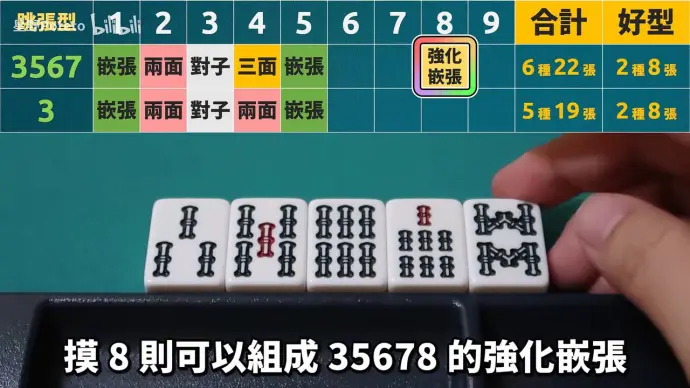
-
摸 8 就可以组成35678，1~9 全部都是进张！
- “懂了，35678，人称小九莲宝灯。”
-
不仅是摸 8 后的强化坎张，其实摸 5 组成 35567 的嵌张也被强化了。
-
虽然比不上 3-7四连或者3-7中膨，但也是很不错的牌型了。
4. 4678 跳张型
- 4678 的进张数和好型数看似和 3567 没有什么差距；
- 然而进 9 后组成的 46789 并未比嵌张 46 强，只能再进 9 组成嵌张对子。
- 本质上与靠边四连（6789）没啥卵用同理；
- 虽然如此，但也比单张 4 要强啦。
5. 5789 跳张型
- 跳张型中唯一没有办法多生出嵌张搭子的。
- 本质上都是因为顺子靠边，导致牌型的延伸性很弱；
- 四面牌型最烂的一集，直接把 5 打了吧；
6. 总结：跳张强度表
3567 > 4678 > 5789 ≈ 5(3-7单张) > 2456 > 1345 > 28 > 19
第十讲：五组理论、一向听集中理论
- 前面介绍了组成手牌的基本元素以及复合型，然而他们毕竟是组成的一部分。
- 本讲将从一个更宏大而整体的角度，去监视一手牌。
1. 五组理论
- 组：已经完成/预计完成的面子或是雀头的组合。
- 绝大胡牌型都是一般性，国士or七对子不适用该理论；
- 不论是否听牌，我们都可以把一幅手牌视为五组。
- 早期可以用五组理论来估计手牌，找出之后前进的方向；
- 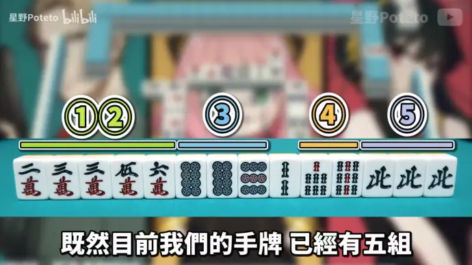
- 例1：12组可能出俩顺子，或者一雀头一顺子；2s 没啥用，可以打掉。
- 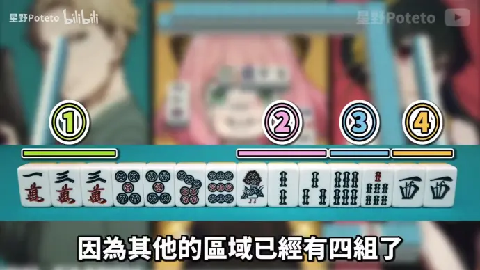
- 例二：5579p 不确定几组，用其他组反推已有四组，所以这里打5p/9p，让其确定为一组会比较好。
- 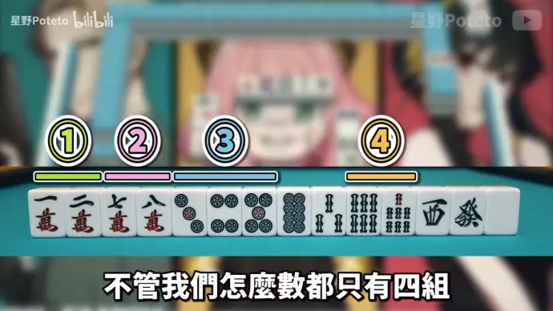
- 例三：搭子不足，期待从单张数牌（搭子候补）中再生出一组。
- 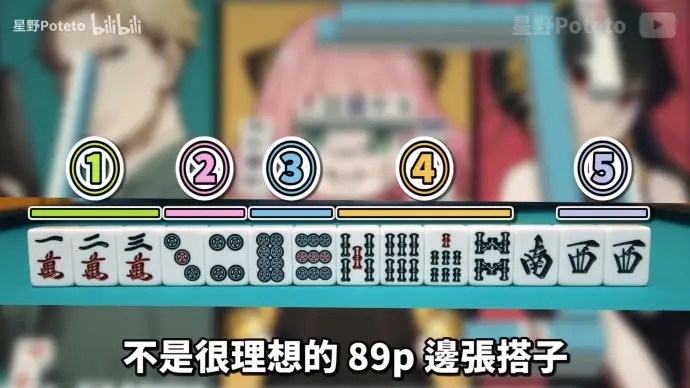
- 例四：89p 边张是愚型搭子，不是很好；相反，4组是四连型，可以延伸出更好的组。
- 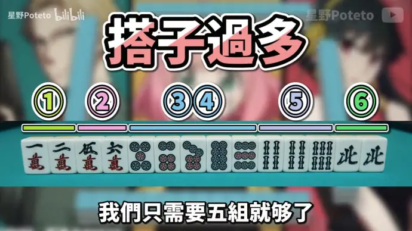
- 例五：搭子过多，通常会拆最弱搭子，为其他五组发展腾出空间。
2. 一向听集中理论
-
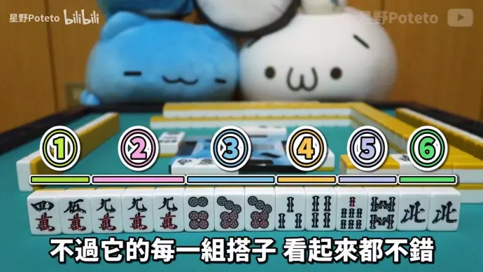
- 例六：此时六个组搭子都不错，拆哪个？
- 看似拆 7p 保留了所有搭子的进张可能性，但要是进了 3m，还是得把搭子拆掉，进张数 16；
- 但如果我们直接把 8s 给拆了，那进张 3m 时就可以毫无负担拆 7s，此时进张数更大（20）；
- 事实上，例六（1）的解法的听牌期望巡数为 9.938，而（2）的解法听牌期望巡数为 9.654！
- 例六：此时六个组搭子都不错，拆哪个？
-
一向听集中理论：
- 当下进张最多不一定会使整体最优。
- 此时，我们要选择使得一向听进张数最多的打法。
- 实际：动态规划比贪心强。
-
为什么是一向听集中理论，而不是听牌集中理论？
- 最少 ≠ 最难。
- 听牌后有荣和机会（从别人手里拿牌），成功率肯定比自摸要高。
- 因此，有时候从一向听 听牌，会比听牌 和牌更难。
-
当然，如果手里的牌都是愚型搭子或者更烂，可以考虑保留6组，增强手牌弹性。
不如弃和。
第十一讲：有效牌重复
-
有效牌重复：单张数牌or搭子之间，彼此进张范围发生重叠，导致整体手牌的进张数减少的情况。
- 例：14s，1s 的进张牌被 4s 重叠，不会影响 23s 的进张机会。
-
不同数牌的有效牌重复效应有区别。
- 如 2p&5p，2p进3p有两面，5p进3p只有嵌张，2p进张能力虽被削弱但并未完全被5p取代。
- 如 3p&6p，尽管重复了一部分，但保留两边仍然有更大的价值，倾向于留下 36p。
1. 19 有效牌重复
- 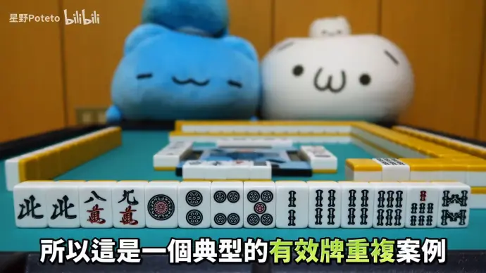
- 例：1245 型，12p大幅弱化。3p 被 45p 覆盖，可以拆有效牌重复的边张 12p。
- 多出的空间，可以留给更好的单张数牌（如 3-7m）；
- 1334、1224、1246 均同理，此时的 1 甚至比单张 19 更弱（因为占了空间，且有效牌重复）
2. 3-7 有效牌重复
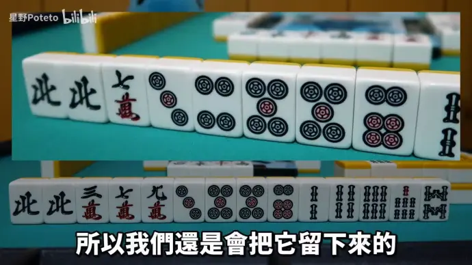
- 3556 同样发生了有效牌重复 。
- 35+56 都需要 4p，即使把 3p 打掉，进张不会改变，并且留下来很好的 556 对子复合型。
- 然而相较于单张数牌 3，进4会有两面搭子，依然占优势。
3. 搭子有效牌重复
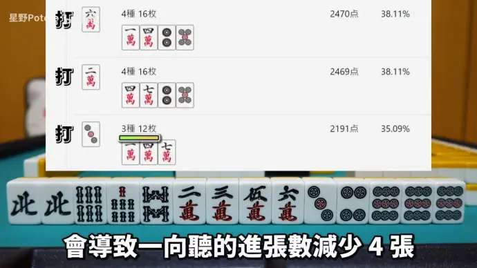
-
2356，是否留下要衡量优缺点。这个例子拆 23 or 56 的话，可以有更多进张数。
- 当然，留下来的话说不定可以做成 23456 的三面搭子，所以看情况。
- 例如，其他组只是坎张的情况下，拆坎张也不错。
-
5566，尽管存在一杯口机会，但严重的有效牌重复！
- 除非打点需求高，否则倾向于拆掉连对型，留其他两面。
- 这里拆6p更好，有摸红 5p 组成刻子机会
-
5577。是有重复的愚型，除非想保留双碰，否则拆其中一边。
4. 单张-搭子之间的有效牌重复
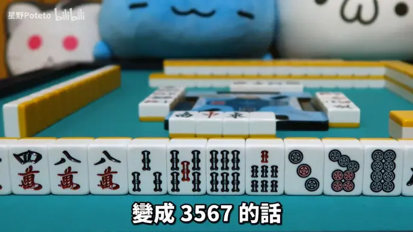
-
例如 356s，这里的3s就不如单张3p。
- 因为 3p 的话有机会做出 34p 的搭子，而 34s 发生了有效牌重复；
-
然而，若例子改为 3567s 的话，就不如拆 3p 了！
- 因为 567 本身已经是完成的顺子，不会与 3 争夺进张，不会发生有效牌重复；
- 相反，3567 作为跳张型，3 被后边的顺子给强化了！进 4 可以组成三面搭；